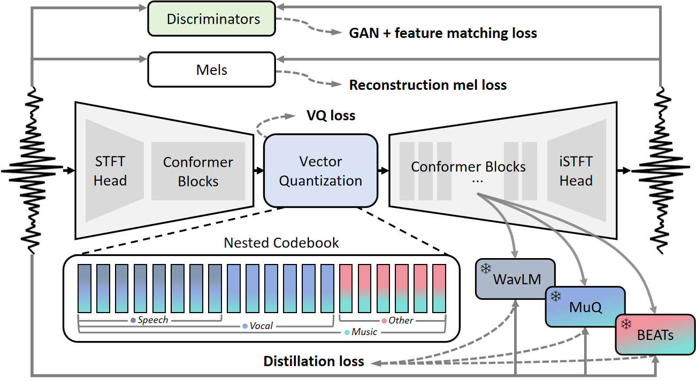

AUV: Teaching Audio Universal Vector Quantization with Single Nested Codebook
Abstract We propose AUV, a unified neural audio codec with a single codebook, which enables a favourable reconstruction of speech and further extends to general audio, including vocal, music, and sound. AUV is capable of tackling any 16 kHz mixed-domain audio segment at bit rates around 700 bps. To accomplish this, we guide the matryoshka codebook with nested domain-specific partitions, assigned with corresponding teacher models to perform distillation, all in a single-stage training. A conformer-style encoder-decoder architecture with STFT features as audio representation is employed, yielding better audio quality. Comprehensive evaluations demonstrate that AUV exhibits comparable audio reconstruction ability to state-of-the-art domain-specific single-layer quantizer codecs, showcasing the potential of audio universal vector quantization with a single codebook.

Figure 1 Overview of AUV framework. During training, the input audio domain is made aware to the model,
whereas it remains agnostic during inference, meeting the actual usage scenario.
This page is for research demonstration purposes only.
Reconstruction Results of Unified Neural Audio Codecs with a Single Codebook
| Domain | Ground Truth - 24 kHz | UniCodec - 24 kHz | AUV (Ours) - 16 kHz |
|---|---|---|---|
| Mixed | |||
| Speech | |||
| Music | |||
| Sound | |||
This page is for research demonstration purposes only.